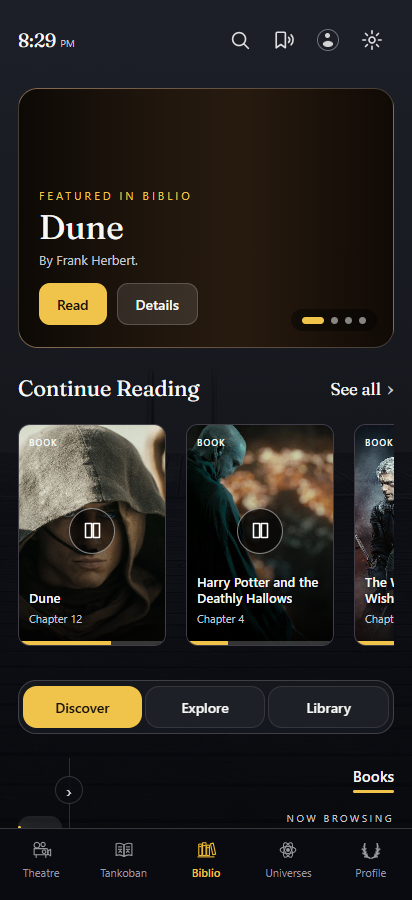
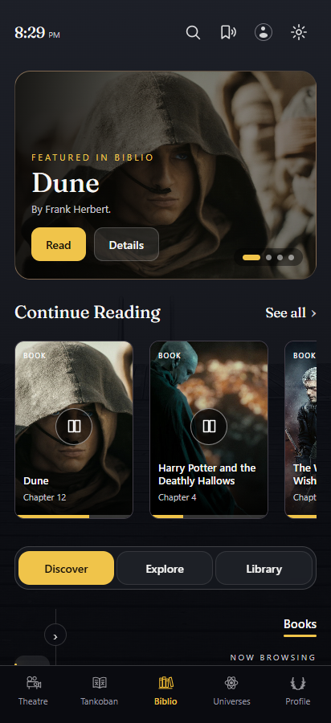
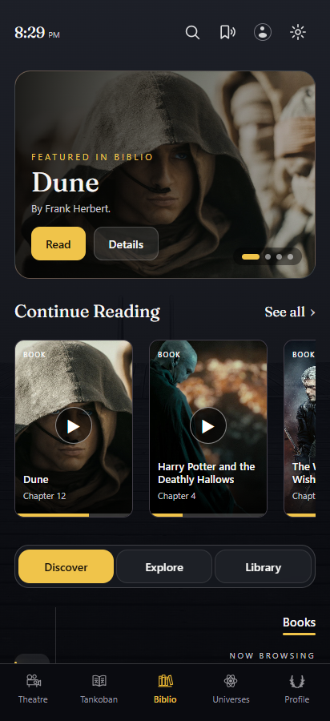
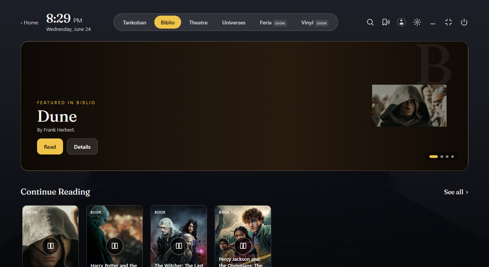

← Batch 3 index
P1 · Narrow poster hero artwork
Decision owner: Hemanth. The alternative is not approved and is not the default. All finished pages retain the approved source branch by default. The rest of Batch 3 is usable without this decision.
In approved CarouselSlide.qml, Biblio’s artKind: "poster" uses a gradient and a right inset on wider cards. At a slide width below 600px, the inset is hidden; the bleed image also has no poster source. The first image below renders that exact branch in HTML. It is not a failed image load. The original worker instead painted a full background and a duplicate inset on desktop.
Original source treatment
Source-faithful HTML attempt · selected default · 412×900

The copy, controls, dots and source palette remain. The featured cover is absent on a narrow card because that is the frozen component’s current branch.
Run selected default
Proposed phone alternative
Optional fitting proposal · not selected · 412×900

Bind the existing bleed layer for narrow poster slides, with the same copy, wash and controls. This retains artwork but crops a portrait cover; the fixture uses representative project art, so it cannot establish the right crop for live book covers.
Run optional proposal
Original worker attempt
Frozen worker HTML capture · 412×900 · comparison only

The worker already used a phone bleed, but also duplicated poster art on desktop. The corrected default follows the frozen source; this panel is preserved evidence, not design authority.
Open preserved original worker
Desktop stays on the approved poster composition
The inset box uses height minus 44px, width × 0.66, a 56px right margin, and PreserveAspectFit behavior. This fixture has no actual Dune book-cover asset in the frozen project bundle; the landscape saga artwork therefore letterboxes inside the portrait inset. That asset limitation is disclosed in B3-015.

Decision needed before changing the QML branch
Choose whether narrow poster heroes should keep the source’s gradient-only treatment, use the demonstrated bleed alternative, or receive a separately approved cover fitting. The same rule applies to Tankoban’s poster slides. No new sheet, control or navigation behavior is proposed.
Authority: desktop a40f66be06f22cdbe75e97e7dc4f1108ab2f5d41; BiblioWorld.qml::_slideFromNative and CarouselSlide.qml. Images are local HTML captures, not app screenshots. See QML-PORTING.md for the exact porting implications.